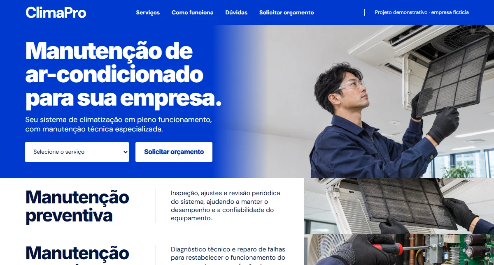

Sites e landing pages
Páginas comerciais, campanhas e sites institucionais, do layout aprovado ao navegador.
Sites, interfaces e integrações para agências e empresas. Explore a entrega e converse comigo quando tiver um projeto em mãos.
Projeto demonstrativo · Página de captação B2B

O que testar: escolha um serviço, abra o orçamento e confira como a seleção chega ao formulário.
Atuo no trecho técnico entre o briefing e a entrega. Posso trabalhar a partir do design da sua agência ou ajudar a definir a página.
Páginas comerciais, campanhas e sites institucionais, do layout aprovado ao navegador.
Fluxos, formulários e telas responsivas que já nascem pensando no uso real.
Captação de leads com validação, encaminhamento ao destino combinado e teste de ponta a ponta.
Alinhamos objetivo, escopo, materiais e o que precisa funcionar na entrega.
Você avalia uma versão navegável. Ajustamos o que ficou fora do combinado.
Conferimos desktop, celular e fluxos críticos e combinamos o repasse.
Qual é a entrega, quem vai usar e o que precisa funcionar?
Falar direto no WhatsApp